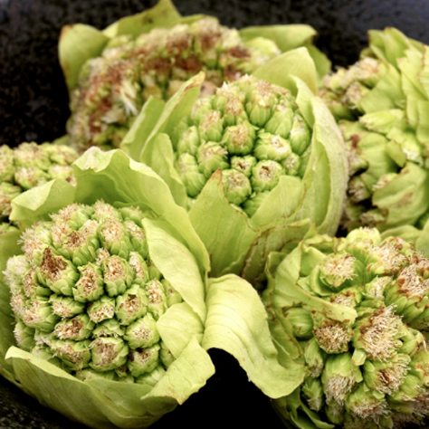
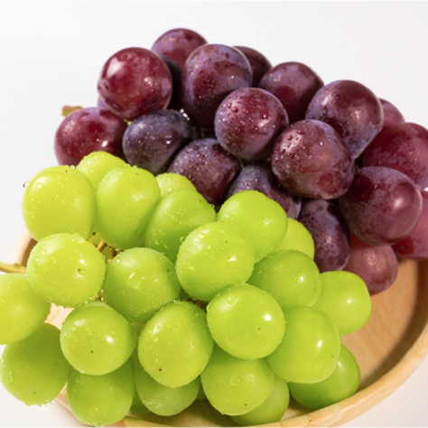
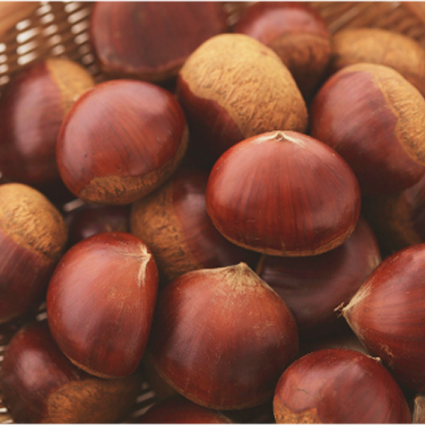
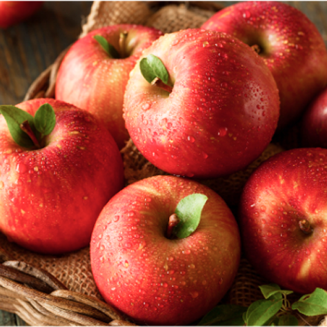
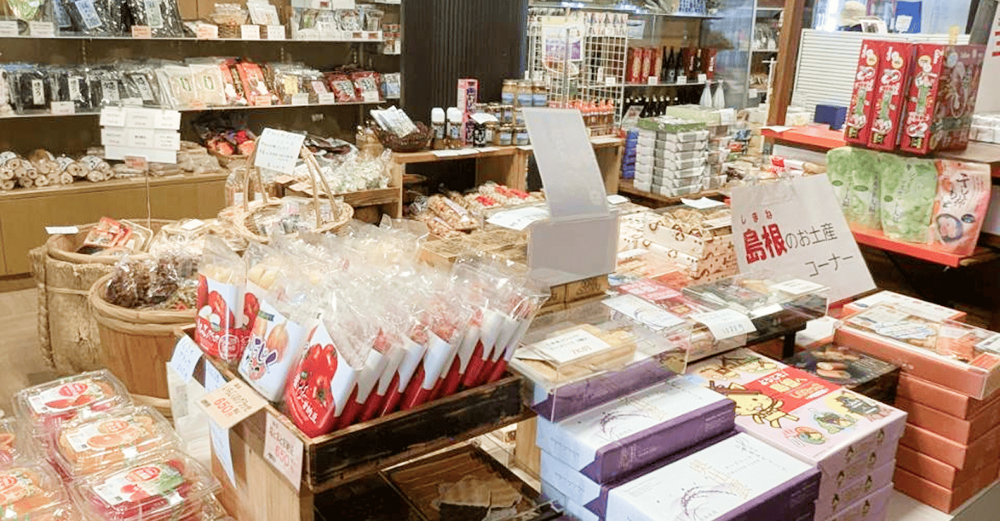
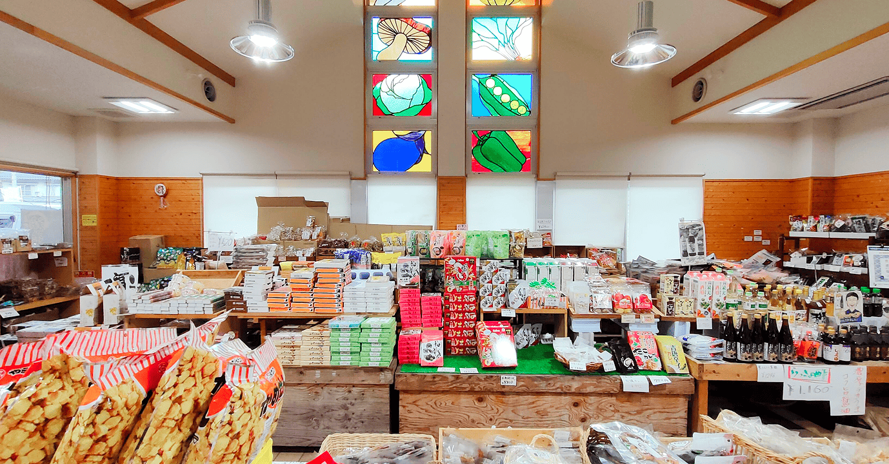

市場・お土産

市場
布野ふれあい市場
 営業時間
営業時間
9:00〜16:00
布野ふれあい市場では、三次市布野町・作木町の生産者が、朝採れの旬の野菜や果物を直接出荷しています。
その日に収穫された新鮮な農産物が並び、広島の農業や生産者の顔を身近に感じられる市場です。
季節の野菜・果物に加え、つきたて餅や漬物、地元の醸造品などの加工品や特産品も豊富。
市場の食材は併設レストランでも使われ、旬の味をそのまま楽しめます。


季節の人気商品
ふきのとう（春）

ぶどう（夏）

栗（秋）

りんご（冬）

お土産
三次のお土産屋さん
 営業時間
営業時間
9:00〜16:00
三次市や布野町の特産品をはじめ、道の駅オリジナル商品がそろうお土産売り場です。
地元産の野菜や果物を使った加工品、つきたて餅や漬物、三次ワインなど、この土地ならではの味が並びます。また、ドライブ途中にうれしい飲み物や軽食、気軽に持ち帰れる商品も充実しています。
旅の思い出に、ご自宅用にも、贈り物にも選びやすいお土産屋さんです。

